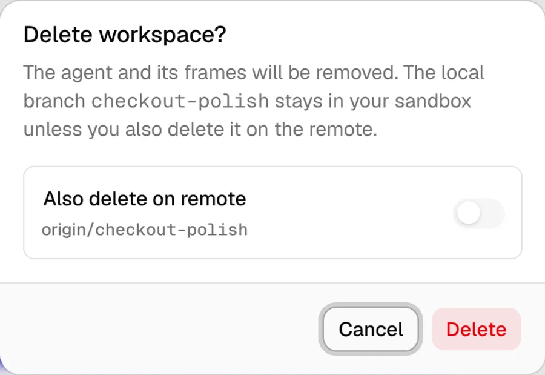
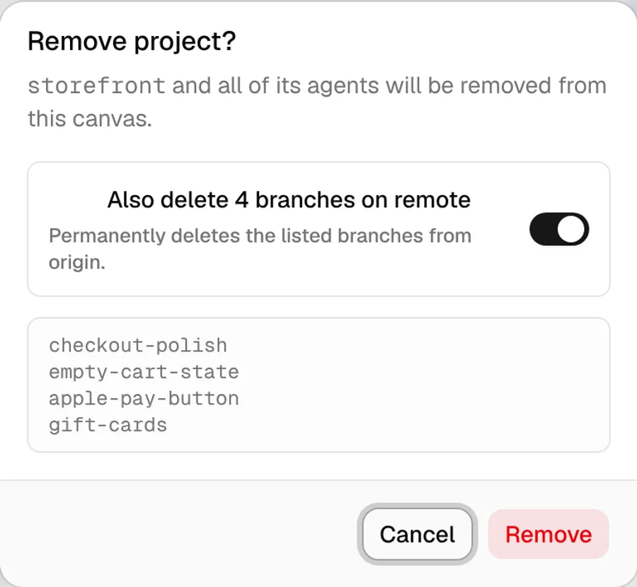
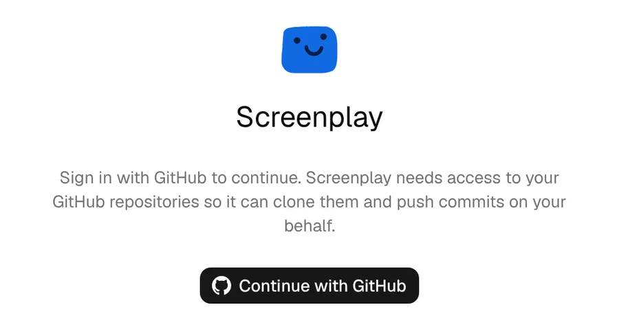
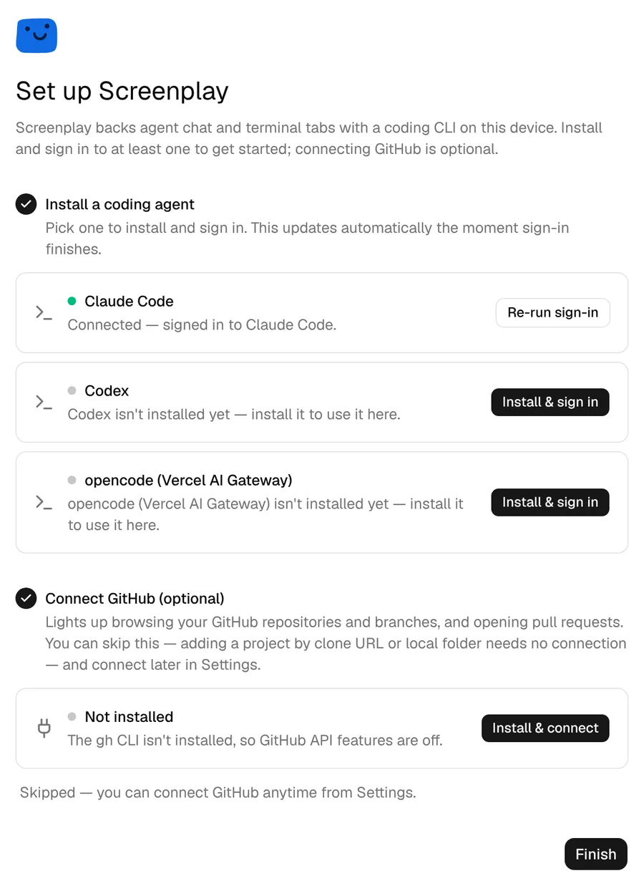
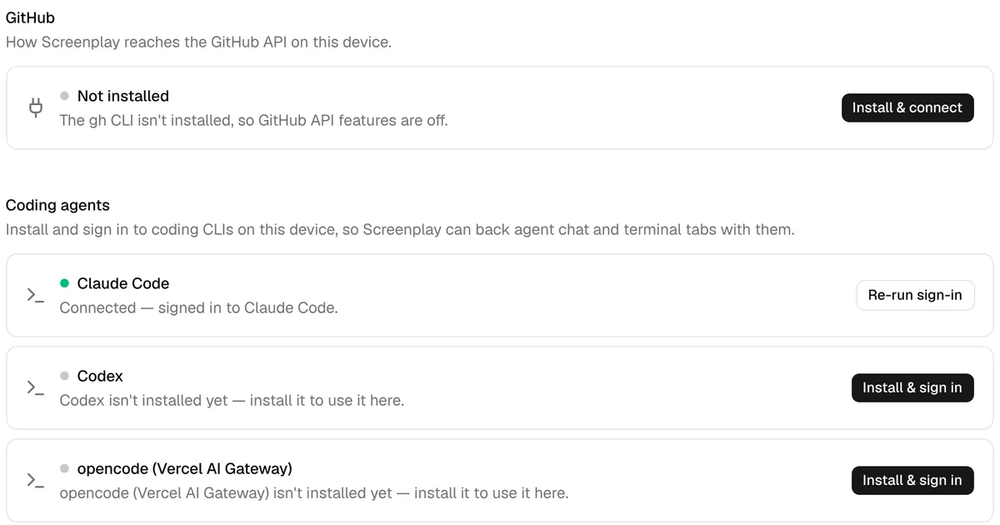
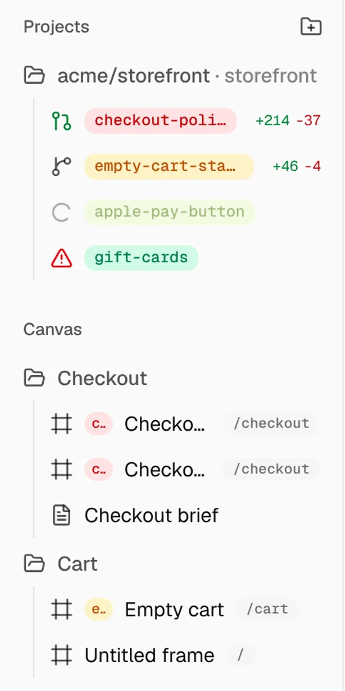
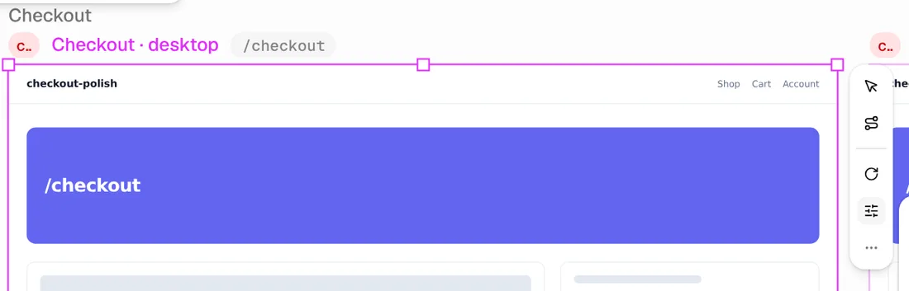
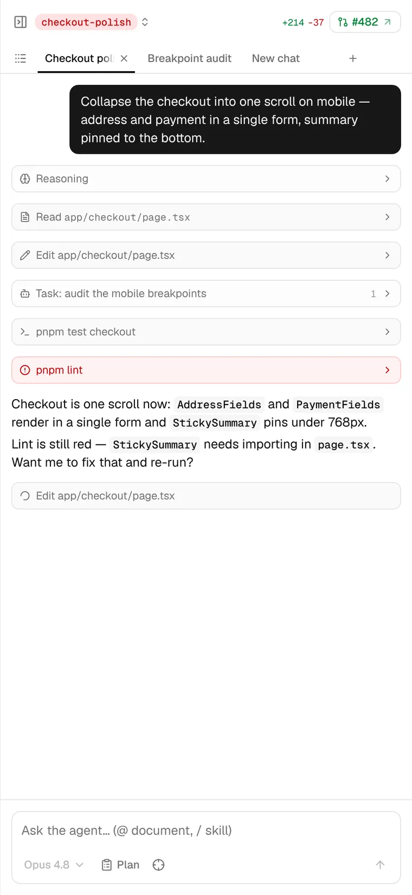
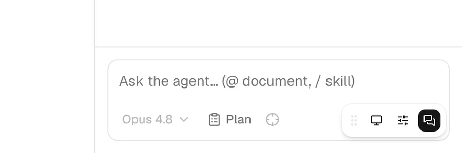
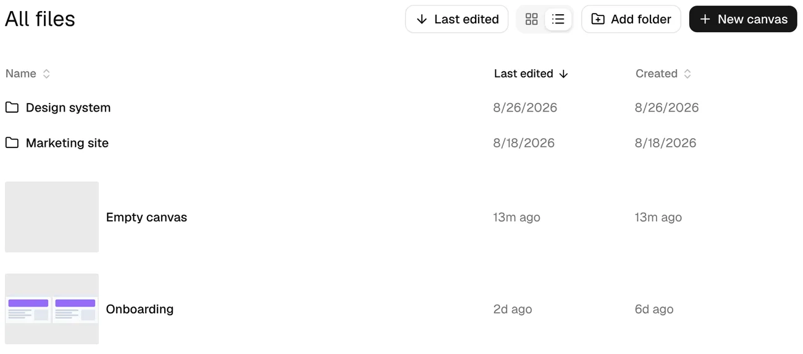

This is a visual pass. Each area pairs a screenshot of today with a mockup of the proposed screen, built from the app's own tokens: Geist, the neutral palette and the 10px radius. The notes under each pair list the concrete visual changes, and the tickets follow.
Four weights compete in a small box: a grey footer band, a heavy focus ring, a pale-red button and a bordered option card. The one thing that matters, what you're about to lose, isn't on screen.


Its 4 Workspaces and their frames are removed. Nothing on GitHub changes unless you tick the box.
A small logo, a wordmark and a grey paragraph float in a lot of white. The paragraph wraps unevenly and leaves one word alone on its last line.

text-wrap: balance and a 34ch measure, so it wraps in even lines. The permissions note drops to 12px under the button, where it explains the button.text-wrap: balance and a max width.Four identical bordered cards, each with an icon, a dot, a title, a sentence and a black button. Nothing stands out, so the page reads as a wall, and a skipped step looks finished.

Every row is a full-width card with a thick border, so the page is a stack of equal boxes. Rows are titled by their state ("Not installed"), and the presets repeat each repo name twice.

Today a comment is a white avatar bubble that expands into a 320px card over the app, with a bare textarea. It doesn't say where it points, and nothing lists comments anywhere.
No "Today" image: the desktop build strips comments, so the harness can't capture them (ticket M5 fixes that). The mockup shows a pin on a frame, its thread, and the panel.
Each Workspace row stacks four treatments: a status icon, a saturated pill, monospace text and red and green numbers. The pill colours come from the status palette, so the loudest thing in the sidebar is a colour that means nothing.

Above each frame are two loose lines of text: a group label, then a chip, a title and a route pill, at slightly different sizes and baselines. When selected, a narrow vertical toolbar lands on top of the next frame.

The heaviest thing in the panel is your own message, a solid black bubble. The header crams a pill, a stat and a PR chip into one line, and the composer's controls are so faint they look disabled.

The player's only chrome is four grey icons in a floating pill in the corner. With the agent open, the pill sits on top of the send button.

In the table view, folders and canvases are two different row designs. Names start at two x positions, row heights jump from 50px to 140px, and the dates switch between formats.

Most of what looks off comes from a few missing rules, not from any one screen. These apply to every ticket above.